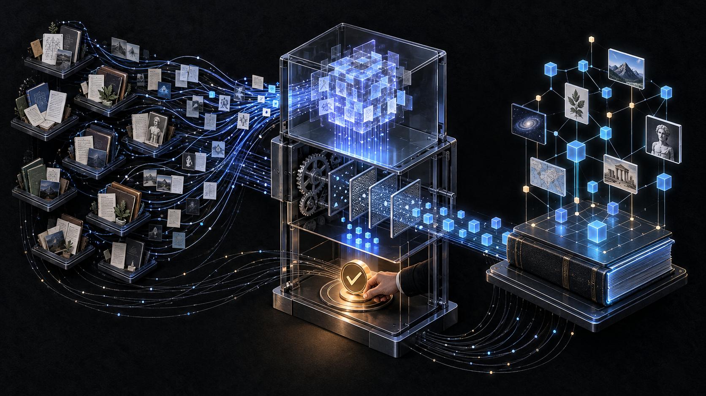
합성된 문장이 어느 팀·어느 노트에서 왔는지 되짚기 어렵다.
서로 다른 정책·출시일이 매끄러운 한 문장으로 뭉개진다.
사람이 승인한 다음 내용이 수정돼도 승인은 그대로 남는다.
현재 파일이 바로 그 승인 산출물인지 다시 확인하기 어렵다.
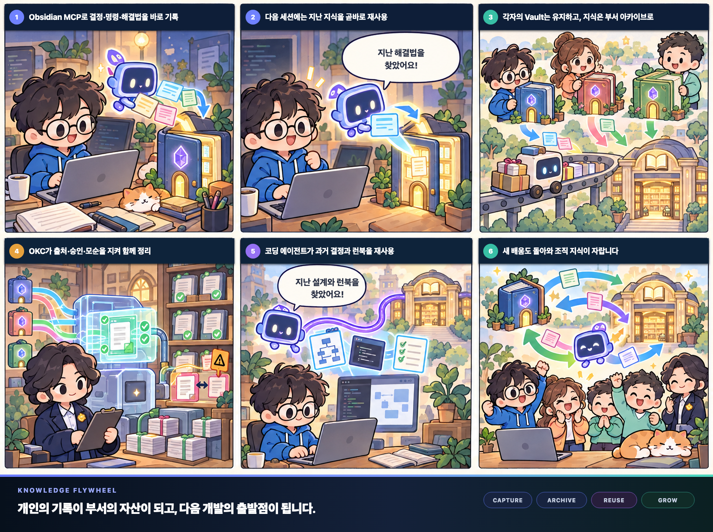
| 단순 병합에서 생기는 문제 | OKC가 적용하는 통제 |
|---|---|
| 입력이 계속 바뀜 | source revision을 수집한 뒤 freeze |
| AI 결과가 곧 최종 결과가 됨 | proposal로만 받고 로컬 검증 수행 |
| 중요한 비평도 사람이 무시할 수 있음 | Major/Critical finding은 compile 차단 |
| 승인 후 내용이 바뀔 수 있음 | 승인을 대상 hash에 바인딩 |
| 결과 파일의 무결성을 다시 확인하기 어려움 | embedded plan에서 결과를 다시 유도해 byte 비교 |
| 과거와 현재 지식이 섞임 | revision-pinned read · history · restore |
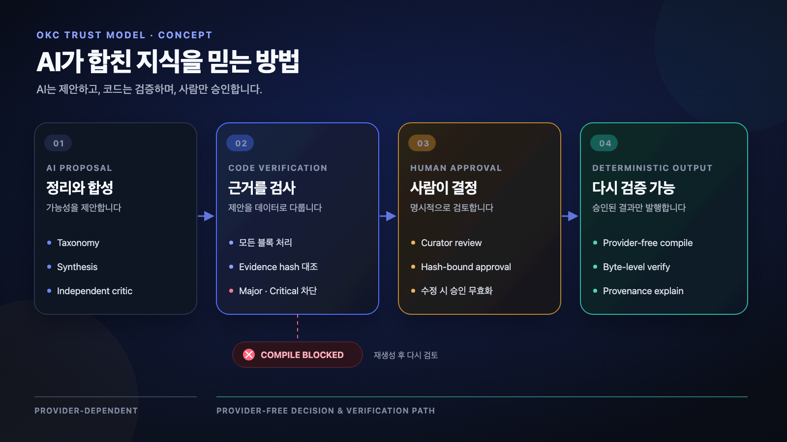
분류·합성·독립 critic을 제안. 소스 텍스트는 명령이 아니라 적대적 evidence로 취급하고, 응답은 로컬 파싱·검증 후 입력·해시에 묶습니다.
모든 문서 1회 처리, block/metadata마다 정확히 하나의 disposition, evidence 해시 일치, Major/Critical 잔존 시 compile 불가.
승인은 taxonomy·proposal·critic·revision hash에 연결. 수정하면 기존 승인 무효, Major/Critical은 waive 불가.
compile·verify·explain은 LLM 호출 없이 실행. 모델·API가 사라져도 내부 일관성을 다시 확인.
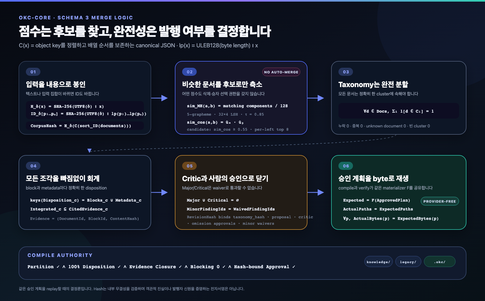
# 내용 기반 identity H_δ(x) = SHA-256( UTF8(δ) || x ) BlockHash(b) = H_δ_block( UTF8(normalized_text(b)) ) CorpusHash = H_δ_corpus( C(documents sorted by DocumentId) ) # taxonomy는 전체 문서의 완전 분할 ∀ d ∈ Docs : Σ 1[d ∈ Ci] = 1 # union(Ci)=Docs, Ci∩Cj=∅ # 승인을 하나의 revision / plan hash로 결합 ClusterRevisionHash = H( C({ taxonomy, proposal, critic, omissions, waivers }) ) IntegrationPlanId = "integration_" || hex(H( C({ corpus, policy, taxonomy, approval, cluster_revisions, provider_recordings }) ))
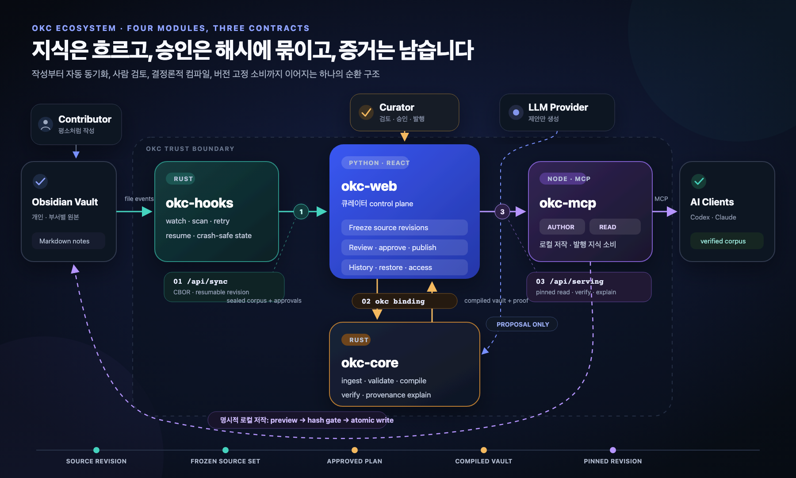
동기화 계층. 변경 감지 + 재개 가능한 업로드. 같은 자격의 후속 업로드는 같은 소스의 새 revision, stale commit은 최신을 못 되돌림.
큐레이션 계층. revision 수집·freeze·review·발행. 인증·review gate·history·restore·read access의 control plane.
컴파일 엔진. 불변 snapshot·검증·결정론 compile. 발행 전 스스로 verify, plan에서 파일·provenance·manifest를 재유도해 byte 비교.
에이전트 인터페이스. 로컬 노트 명시 저작 + revision-pinned 지식 읽기. web 오류 시 오래된 로컬로 조용히 전환하지 않음.
| 계약 | 연결 | 전달하는 것 |
|---|---|---|
| /api/sync | hooks → web | canonical CBOR, 재개 가능한 source revision |
| okc Python binding | web ↔ core | sealed corpus, review 결정, compiled artifact |
| /api/serving | web → mcp | pinned revision, files, verify · explain |
| 순간 | 사용자가 하는 일 | OKC가 뒤에서 하는 일 |
|---|---|---|
| 처음 연결할 때 | 설정을 채우고 upload 고지 확인 후 standing consent 1회 부여 | setup이 MCP 등록·watcher auto-start 준비, 동의 전 업로드는 차단 |
| 문제 해결 직후 | “이번 세션을 관련 노트에 기록해줘” | okc-mcp가 관련 노트·section·폴더를 찾아 변경안 미리보기 |
| Obsidian 저장 후 | 평소처럼 다음 작업 계속 | okc-hooks가 변경 감지 → 새 source revision 전송 |
| 네트워크가 끊길 때 | 일시적 오류라면 별도 작업 없음 | server offset부터 재개, 새 event 없이 스스로 재시도 |
| 다음 세션 | “우리 팀은 전에 어떻게 해결했지?” | 고정된 부서 archive에서 과거 결정·명령·런북을 읽음 |
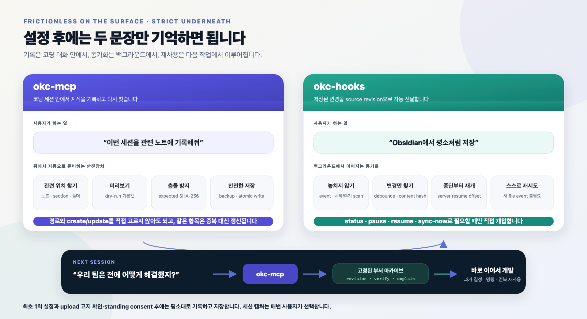
사용자가 세션을 선택하고 요청하면 기록. 자동 감시·종료 시 몰래 수집 없음, 매번 user-selected 선언 필요.
prepare가 관련 노트·heading·폴더 관례·이전 capture 위치를 찾아, 사용자가 경로/생성 여부를 정할 필요 없음.
모든 write는 dry-run 기본. 관련 주제는 기존 section 보강, 무관한 본문·YAML은 보존.
expected SHA-256 확인 + Vault 밖 backup + atomic write + read-back hash. 쓰기는 로컬만, 읽기는 발행 revision 고정.
upload 대상·공개 범위 고지 확인 후 standing consent를 줘야 동기화 시작. 언제든 철회, 의심스러우면 차단.
실시간 event + 시작 scan + 주기 reconciliation scan. OS watcher가 놓쳐도 다음 scan이 재확인.
연속 save를 debounce, path·SHA-256·size manifest를 negotiate해 없는 blob·미완 구간만 chunk 전송.
authoritative resume offset을 따르고, transient failure는 backoff 후 새 event 없이 재시도.
state를 Vault path·HTTPS endpoint·token fingerprint에 바인딩. 대상이 바뀌면 명시적으로 중단.
status·pause·resume·sync-now·history·reload·stop. setup은 재실행 안전, uninstall은 Vault 미변경.
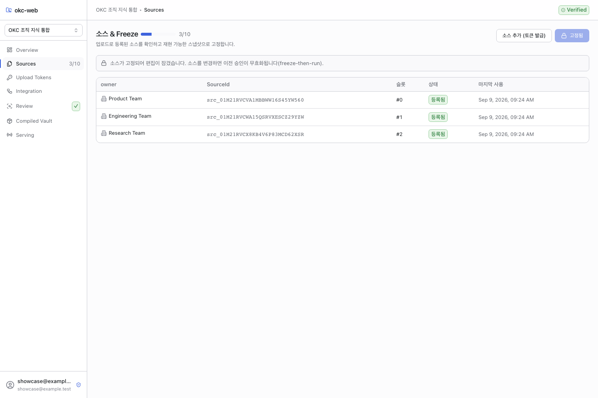
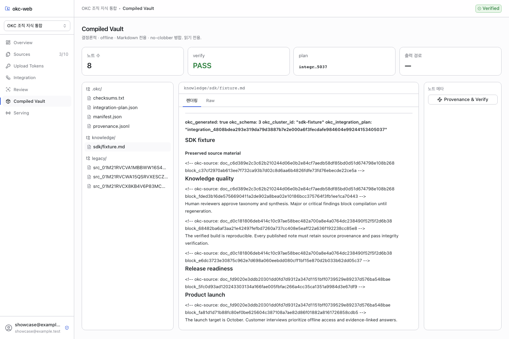
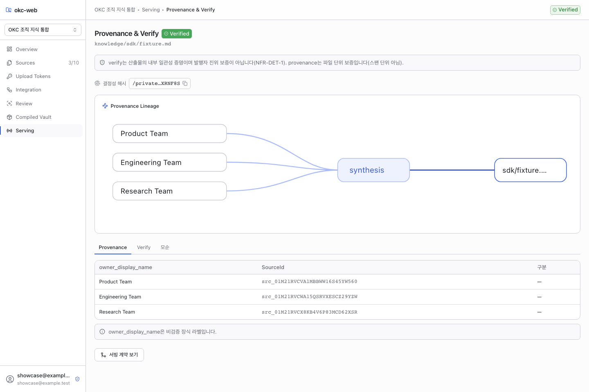
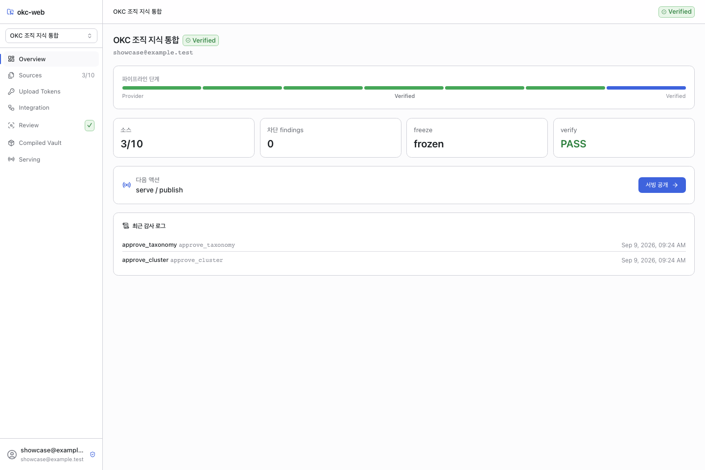
승인 계획을 staging에 만든 뒤 스스로 verify, 통과해야 no-replace publish. verify는 manifest를 믿지 않고 embedded plan에서 파일·provenance·checksum을 재유도해 byte 비교 — 직접 수정 시 read도 VERIFICATION_FAILED.
curator decision에 “승자 선택”이 없음. 타입·SQLite constraint는 approve/regenerate만 허용, omission·minor waiver는 사유 포함 승인에서만. 충돌 주장은 각 evidence와 함께 보존.
Revision A를 읽던 client는 B 발행 후에도 A를 명시 요청해 같은 byte를 읽음. 없는 revision을 현재로 조용히 바꾸지 않으며 history·restore 제공.
| 영역 | 최신 로컬 기록 |
|---|---|
| Core Rust | 130 passed |
| Core Python binding | 12 passed |
| Core Node binding | 13 passed |
| Hooks | 250 passed |
| MCP | 103 passed |
| Web backend | 114 passed |
| Web frontend | 8 passed |
| Four-module bridge | 1 passed |
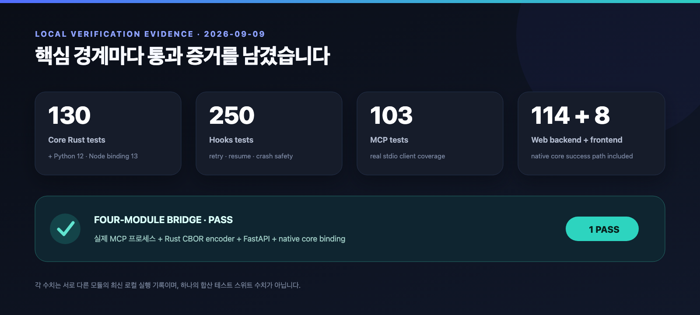
cp okc-install.config.example.json okc-install.config.json
./install.sh # hooks + MCP 원커맨드 설치